Question. Suppose an experiment resolves physical structure only up to a length \(R\). What justifies expecting related structure beyond \(R\), and can finite observations ever establish continuation to arbitrarily large scales?
Main conclusions. Finite observations alone cannot establish unbounded continuation. In a probability model, the answer depends on the unobserved tail of the scale intensity \(\eta(L)\). In two-dimensional turbulence, positive inverse energy flux provides a mechanism for growth toward larger scales, but existing theorems do not follow one evolving flow to infinity. Our computations show inverse transfer before the classical spectrum appears, followed later by a short constant-flux, \(k^{-5/3}\)-like range. They support the assumptions behind \(L(t)\propto t^{3/2}\); they do not test that law.
Running example. Consider a two-dimensional flow forced at \(L_f=1\,\mathrm m\), with energy injection rate \(\varepsilon=10^{-3}\,\mathrm{m^2\,s^{-3}}\). An experiment detects coherent structures only up to \(R=8\,\mathrm m\). The probabilistic question is whether structures exist beyond \(8\,\mathrm m\); the dynamical question is whether the flow carries energy across that scale.
1. Finite observations and probabilistic continuation
Scales as a point process (Fig. 1)
Suppose that every structure we care about, such as an eddy, wave, or instability, has a characteristic length \(L>0\). We record only that length, representing the collection by a random set of points on the scale axis above a chosen cutoff \(L_{\min}>0\).
Measure the axis logarithmically: 1 to 2 metres is the same relative change as 100 to 200 metres. Assume that counts in disjoint scale intervals are independent and that the expected count near \(L\) is
This defines a Poisson point process with density \(\eta(L)\) per unit log scale. Only structures that interact with the phenomenon under study count as relevant. Measuring relative \(d\)-dimensional volume merely adds a factor \(d\), which can be absorbed into \(\eta\). See Kingman [4].
The number \(N(R,S)\) of structures with scales in \((R,S]\) is Poisson with mean
The chance of seeing at least one such structure is therefore
Now let the upper limit \(S\) grow without bound. The model gives the exact test
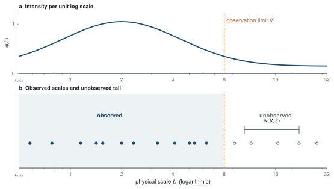
Coin-flip intuition (Fig. 2)
First suppose \(\eta(L)=\eta_0>0\) at every scale. Each doubling interval \((2^jR,2^{j+1}R]\) has the same hit probability
Independence makes the probability of missing the first \(m\) intervals \(2^{-m\eta_0}\to0\). As with repeated coin tosses having a fixed chance of heads, hits occur infinitely often with probability one. Arratia calls this a scale-invariant Poisson process [1].
In the running example, take \(\eta_0=1\). Each interval \((8,16],(16,32],(32,64]\), and \((64,128]\) metres then has probability \(1/2\) of containing a relevant structure. The probability of finding at least one by \(128\,\mathrm m\) is
If the same constant intensity continues through infinitely many doubling intervals, structures occur at arbitrarily large scales with probability one.
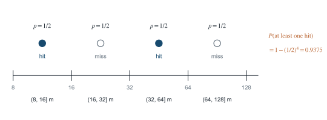
A decaying tail (Fig. 3)
The answer changes if large structures become sufficiently rare. For example, if \(\eta(L)=\eta_0(L_{\min}/L)^a\) with \(\eta_0>0\) and \(a>0\), then
The total expected number beyond \(R\) is therefore finite. The probability that no relevant structure exists beyond \(R\) is
For a numerical contrast, define two models that agree throughout the observed range:
Model \(A\) predicts unbounded scales almost surely. For model \(B\),
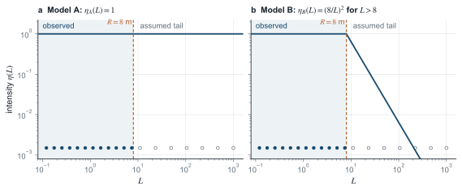
Why finite data cannot decide (Fig. 4)
Models \(A\) and \(B\) agree on every possible observation at \(L\le8\,\mathrm m\), yet give opposite answers about unlimited continuation. The difference lies in the unobserved tail of \(\eta\).
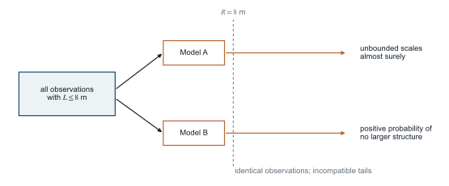
2. What Navier–Stokes can supply
The Poisson model counts scales but does not create them. Two-dimensional flow supplies a mechanism: an inverse cascade can carry energy from the forcing scale toward larger lengths. Fjørtoft identified the role of the energy and enstrophy constraints [5]; Paret and Tabeling later observed the cascade in a thin-layer experiment [6]. Consider the randomly forced, damped Navier–Stokes equations on a periodic square \(\mathbb T_\lambda^2\) of size \(\lambda\):
Viscosity acts through \(\nu\), while \(\alpha\) sets the large-scale drag and \(\gamma\ge0\) its scale dependence. The stochastic forcing \(W^\lambda\) injects mean energy \(\varepsilon>0\) per unit time and area near one fixed length.
The inverse-flux law (Fig. 5)
Bedrossian, Coti Zelati, Punshon-Smith, and Weber proved an inverse-flux law for stationary solutions in the large-box, vanishing-viscosity, vanishing-drag limit [2]. Their assumptions include
where \(\omega=\operatorname{curl}u\) and expectation is over the stationary ensemble. The powers \(-2\gamma\) and \(-\gamma\) agree because the quadratic norm splits the drag operator between its two factors, as in Ref. [2].
To measure transfer across a length \(\ell\), compare velocities at two points separated by \(\ell\) in direction \(n\): \(\delta_{\ell n}u(x)=u(x+\ell n)-u(x)\). The normalized spatial and directional average of the resulting cubic quantity is
The theorem gives an upper inertial-range length \(\ell_\alpha\to\infty\) for which
The positive sign marks transfer toward larger lengths. For any finite \(R\), a sufficiently large box and weak drag permit active transfer at some \(\ell\ge R\). But the system may change with \(R\); the theorem does not follow one flow to ever larger scales.
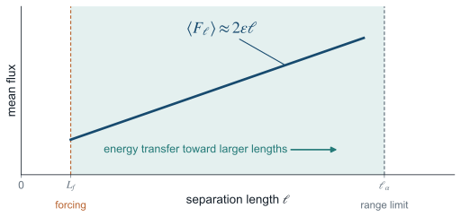
Numerical flux at 8 metres (Fig. 6)
For the running example, suppose \(8\,\mathrm m\) lies inside the inertial range. Equation (5) then gives
The positive flux carries energy across \(8\,\mathrm m\) toward larger structures, providing a mechanism for continuation beyond the measurement limit, not proof that one flow grows without bound.
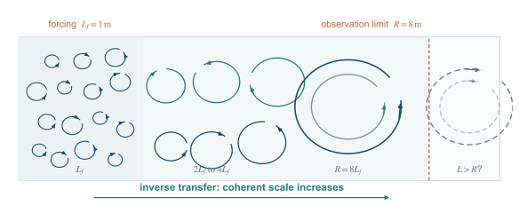
The role of ergodicity (Fig. 7)
There is also an almost-sure statement at each fixed set of parameters. If the chosen stationary measure is ergodic, Birkhoff’s theorem gives
The long-time average flux is therefore positive for almost every realization. The result applies to an allowed scale in a fixed box and does not remove that box’s maximum length. See Birkhoff [7].
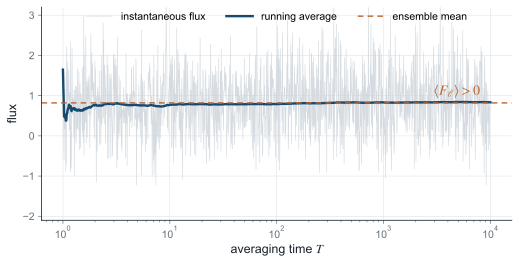
3. Conditional scale-growth theory
Unbounded growth requires following one statistical flow rather than changing the box and drag with the target scale. On the natural domain \(\mathbb R^2\), a spatially homogeneous flow generally has infinite total energy. The appropriate object is therefore a homogeneous statistical solution with finite energy per unit area, not a finite-energy \(L^2(\mathbb R^2)\) solution.
Defining the large scale (Fig. 8)
We must also define what the flow’s “large scale” means. Let \(E(k,t)\) be its energy spectrum, where small wave number \(k\) means large physical length. Fix a fraction \(\theta\in(0,1)\) and define
The spectral density \(E(k,t)\) gives energy per unit area and wave number. The cutoff \(k_\theta(t)\) contains the fraction \(\theta\) of total energy, and \(L(t)=1/k_\theta(t)\) is the corresponding length. Transfer toward smaller \(k\) increases \(L(t)\). The desired theorem is
The probability in (7) is taken over realizations of the proposed homogeneous statistical solution on \(\mathbb R^2\).
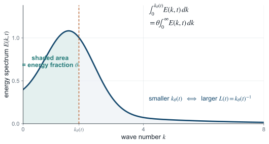
A conditional growth law (Fig. 9)
What growth rate should we expect? Write \(k_L(t)=L(t)^{-1}\) for the moving infrared edge and \(k_f=L_f^{-1}\) for the forcing wave number. If a constant-flux interval has formed between them, Kraichnan’s inverse-cascade hypothesis [3] gives
The flux \(\Pi_{\le k}\) is the nonlinear energy delivered below \(k\), and \(C_I>0\) is the inverse-cascade spectral constant. The first relation gives constant energy transfer across the range; the second gives its similarity spectrum. Neither the moving front nor the forcing shell is expected to obey that power law.
For the scaling calculation, extend the interior form to both endpoints and neglect dissipation and leakage from the inverse range. Set \(t=0\) when its lower edge is at the forcing scale, so \(L(0)=L_f\). The energy accumulated below \(k_f\) then equals \(\varepsilon t\):
Since \(\int k^{-5/3}dk=-(3/2)k^{-2/3}\) and \(k_L^{-2/3}=L^{2/3}\), solving for \(L\) gives
Differentiation gives the equivalent form \(dL/dt=C_I^{-1}\varepsilon^{1/3}L^{1/3}\). Both forms assume constant inverse flux and the \(-5/3\) spectrum; neither follows here from (3).
For a simple numerical illustration, set \(C_I=1\). This choice makes the arithmetic transparent; it is not an empirical calibration. Using the values from the running example, (8) becomes
The predicted scale reaches the observation limit after 45 seconds,
and \(27\,\mathrm m\) after 120 seconds. Both values are conditional on the assumed spectrum.
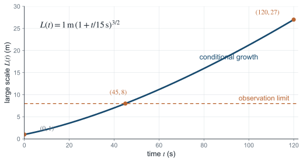
4. Computational evidence
Numerical model and diagnostics
We tested the mechanism and its spectral premises in a finite periodic pseudospectral model. In nondimensional variables,
Equation (9) is the two-dimensional incompressible Navier–Stokes nonlinearity in vorticity form on the \(2\pi\)-periodic square, with \(\nabla^\perp\psi=(\partial_y\psi,-\partial_x\psi)\). Eighth-order hyperviscosity removes enstrophy near the numerical cutoff while minimizing disturbance at lower wave numbers; it replaces the ordinary viscosity in (3). We set \(\nu_4=3\times10^{-13}(N/128)^{-8}\) to keep its cutoff strength comparable across resolutions. With \(\alpha=0\), the runs are growing transients. Each begins with energy \(0.02\) in a random vorticity field within a shell of width \(2\) about \(k_f\). Independent increments there inject exactly \(\varepsilon\,dt\) per step. The solver uses two-thirds dealiasing, a skew-symmetric nonlinear term, and integrating-factor Runge–Kutta time stepping. These nondimensional mechanism tests are separate from the dimensional example above.
For a Fourier vorticity coefficient \(\widehat\omega_{\mathbf k}\) on an \(N\times N\) grid, define the modal energy, radial shell spectrum, and energy-weighted length by
The shell sum \(E_N(K,t)\) is the unit-width discrete analogue of \(E(k,t)\,dk\). The statistic \(L_E\) grows as energy shifts toward smaller wave numbers, but averages the whole spectrum and need not equal the front scale \(L(t)=k_L(t)^{-1}\) in (8).
To distinguish nonlinear transport from direct forcing, let \(\widehat{\mathcal N}_{\mathbf k}\) denote the nonlinear vorticity tendency, with forcing and dissipation excluded, and compute
Positive \(\Pi_{\le K}\) means that nonlinear interactions give energy to modes at or below \(K\). A mature inverse range requires both \(\Pi_{\le K}\approx\varepsilon\), nearly independent of \(K\), and \(E_N(K)\propto K^{-5/3}\) across an interior interval. We therefore test spectrum and flux together. Every run also satisfies the energy audit
where \(D\) is the hyperviscous energy-dissipation rate and \(r_E\) is the measured balance residual.
Ensemble and regression check
The first experiment used sixteen \(256^2\) trajectories: four injection rates and four seeds per rate, forced near \(k_f=24\) for fifteen nondimensional time units. Every trajectory showed positive late transfer below \(k_f/2\), while \(L_E\) grew by factors of \(3.4\) to \(4.2\). The nonlinearity moved injected energy toward larger structures without direct low-mode forcing.
We regressed the smoothed growth rate \(dL_E/dt\) on injection rate, current length, measured flux, infrared energy fraction, spectral width, and enstrophy. Grouped evaluation omitted a complete trajectory or injection rate, preventing correlated samples from one trajectory from entering both training and test sets. On omitted injection rates, the asymptotic law \(dL_E/dt=C\varepsilon^{1/3}L_E^{1/3}\) had root-mean-square log-error \(0.389\), a typical factor of \(1.48\). A descriptive power law using measured flux and current length reduced the error to \(0.183\), or a factor of \(1.20\); other features added no improvement. The maturity test below suggests that measured throughput captures transient information absent from the nominal injection rate. This comparison does not propose a universal closure law. The ensemble results contain all holdouts and conservation checks.
Resolution versus elapsed time (Fig. 10)
A second experiment held \(k_f=16\), \(\varepsilon=0.004\), and duration \(2.5\) fixed while comparing two seeds at \(256^2\) and \(512^2\). Over \(2\le K\le12\), the mean fitted shell-spectrum slopes were \(+0.92\) and \(+1.14\), not \(-5/3\). The characteristic length grew only about \(14\%\), and \(\Pi_{\le K}\) was positive but not flat. Doubling the ultraviolet resolution did not produce a mature inverse range in the short window. Maximum relative energy-balance and injection errors were \(6.4\times10^{-11}\) and \(1.2\times10^{-13}\); the focused results contain both seeds and all recorded spectra.
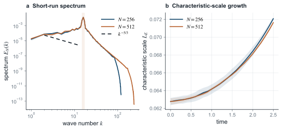
Why the short-run spectrum rises
The early positive slopes have a simple geometric interpretation. Let \(n_N(K)\) be the number of lattice modes in shell \(K\), and let \(q_N(K)=E_N(K)/n_N(K)\) be its mean energy per mode. Away from the smallest shells and the truncation boundary, two-dimensional shell geometry gives
If the low-wave-number modes initially have nearly equal energy, \(q_N(K)\approx q_0\), then \(E_N(K)\approx2\pi q_0K\): shell summation alone produces slope \(+1\). More generally,
Dividing by the exact discrete mode counts gives
The near-zero per-mode exponents match an approximately equal-energy, random-phase transient, not necessarily statistical equilibrium. A mature inverse cascade instead requires \(q_N(K)\propto K^{-8/3}\), since dividing \(E_N(K)\propto K^{-5/3}\) by \(n_N(K)\propto K\) subtracts one from the exponent.
Time-maturity test (Fig. 11)
We retained \(N=256\), \(k_f=16\), \(\varepsilon=0.004\), and the same two seeds, but extended the duration from \(2.5\) to \(15\). Spectra and transfers were recorded every \(0.1\) time unit and averaged over the preceding \(\Delta t=1\):
with the integrals evaluated as averages of the stored samples. For a band \(a\le K\le b\), the least-squares spectral exponent is
For the candidate flux plateau \(6\le K\le12\), define its normalized mean and coefficient of variation by
The condition \(\overline\pi\approx1\) tests whether the cascade carries the injected energy; a small \(\operatorname{CV}_\pi\) tests whether the transfer is nearly constant across cutoffs. Two-seed means, with sample standard deviations where shown, were
At \(t=15\), the individual spectral slopes are \(-1.732\) and \(-1.706\), while the normalized mean fluxes are \(0.991\) and \(1.003\). The two log–log fits have mean \(R^2=0.847\). Together, spectrum and flux indicate an inverse-cascade-like interior behind a moving infrared front.
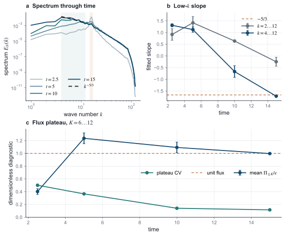
The band distinction matters. Fitting all shells \(2\le K\le12\) at \(t=15\) gives only \(-0.247\) because \(K=2,3\) remain below the extrapolated interior spectrum. The cascade has built a short interior behind its advancing front, not a power law down to the box scale. The inspected band \(K=4,\ldots,12\) spans nine shells, less than half a decade, and only two seeds. Equation (15) therefore supports maturation in this model, not a precision estimate of a universal exponent.
The simulations show a finite-time crossover. Positive inverse transfer appears first, followed by an approximately equal-energy-per-mode transient. A constant-flux plateau and short \(-5/3\)-like interior emerge later. This sequence explains both the regression’s use of measured flux and the failure of added resolution at \(t=2.5\) to reveal the spectrum. It supplies the local premises of (8), but testing \(L(t)\propto t^{3/2}\) requires tracking the infrared front across a much larger scale range before it reaches the box. Maximum long-run energy-balance and injection errors were \(5.2\times10^{-11}\) and \(3.1\times10^{-13}\); the checkpoint analysis gives aggregate and per-seed values.
5. What is established and what remains open
The results separate into four levels:
The remaining gap (Fig. 12)
The computation shows that a constant-flux spectrum can emerge locally, not that it persists as the infrared edge moves without bound. It also leaves open whether the front length and spectral-quantile length remain uniformly comparable; fixed upper and lower bounds would preserve the exponent but alter its prefactor. Birkhoff’s stationary argument cannot settle either question. Drag, finite forcing time, or a container may stop growth, while a periodic simulation eventually reaches the lowest mode and may form a condensate. The open problem is to derive almost-sure growth of the infrared scale for one flow on \(\mathbb R^2\), under explicit assumptions and without presupposing the \(k^{-5/3}\) law.
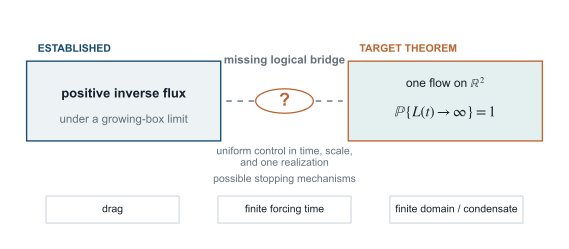
References
- R. Arratia, “On the Central Role of the Scale Invariant Poisson Processes on \((0,\infty)\),” DIMACS Series 41 (1998), arXiv:1611.05572.
- J. Bedrossian, M. Coti Zelati, S. Punshon-Smith, and F. Weber, “Sufficient Conditions for Dual Cascade Flux Laws in the Stochastic 2d Navier–Stokes Equations,” Arch. Ration. Mech. Anal. 237 (2020), 103–145.
- R. H. Kraichnan, “Inertial Ranges in Two-Dimensional Turbulence,” Phys. Fluids 10 (1967), 1417–1423.
- J. F. C. Kingman, Poisson Processes, Oxford Studies in Probability 3, Oxford University Press (1993), doi:10.1093/oso/9780198536932.001.0001.
- R. Fjørtoft, “On the Changes in the Spectral Distribution of Kinetic Energy for Twodimensional, Nondivergent Flow,” Tellus 5 (1953), 225–230.
- J. Paret and P. Tabeling, “Experimental Observation of the Two-Dimensional Inverse Energy Cascade,” Phys. Rev. Lett. 79 (1997), 4162–4165.
- G. D. Birkhoff, “Proof of the Ergodic Theorem,” Proc. Natl. Acad. Sci. USA 17 (1931), 656–660.